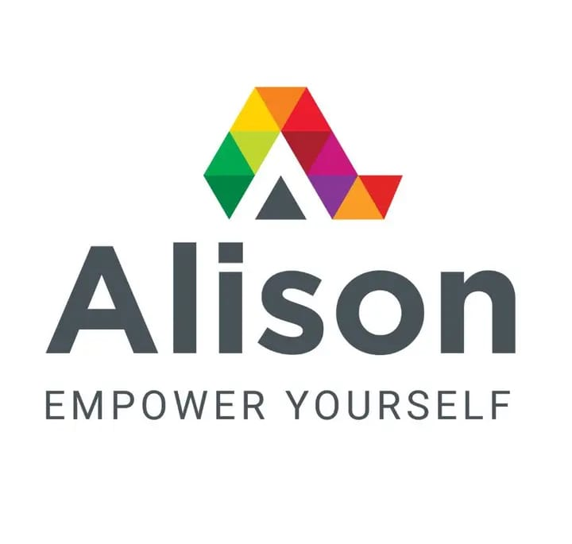
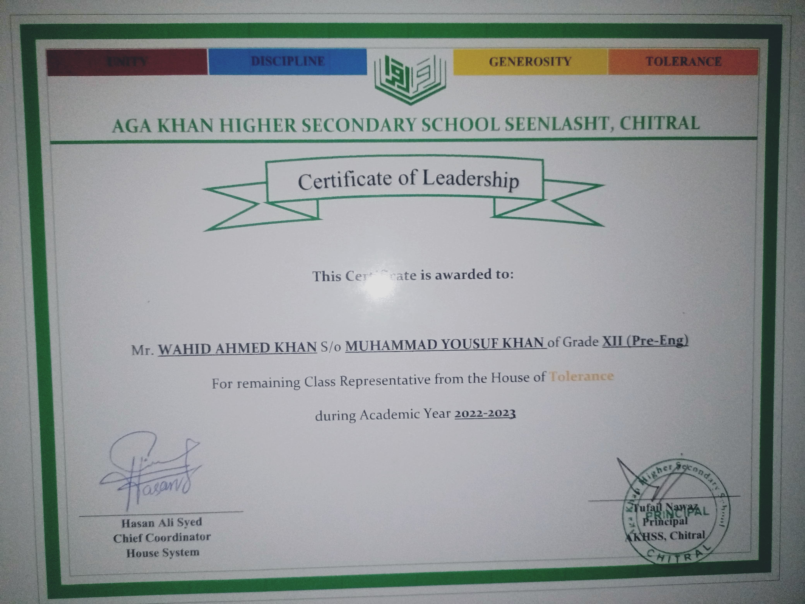
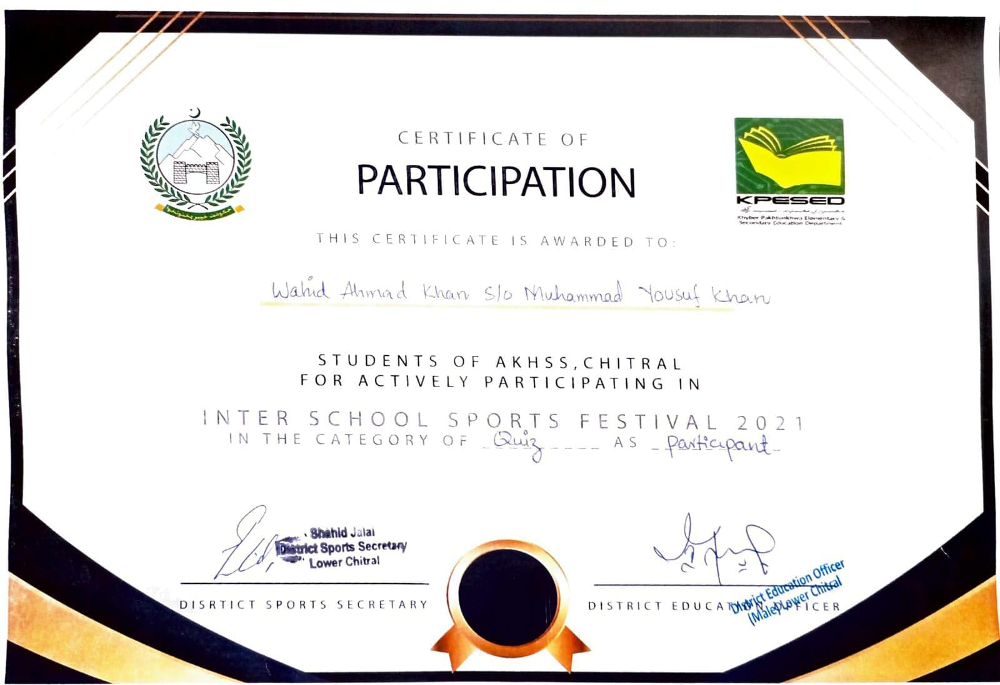
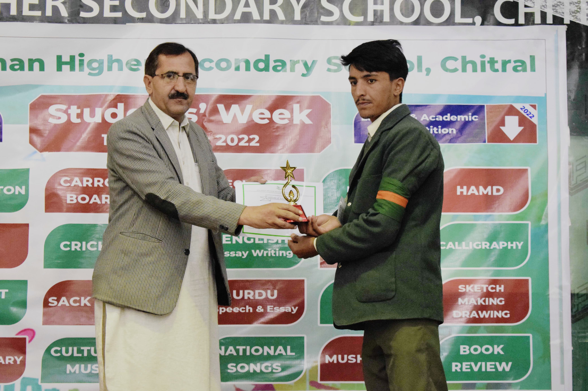
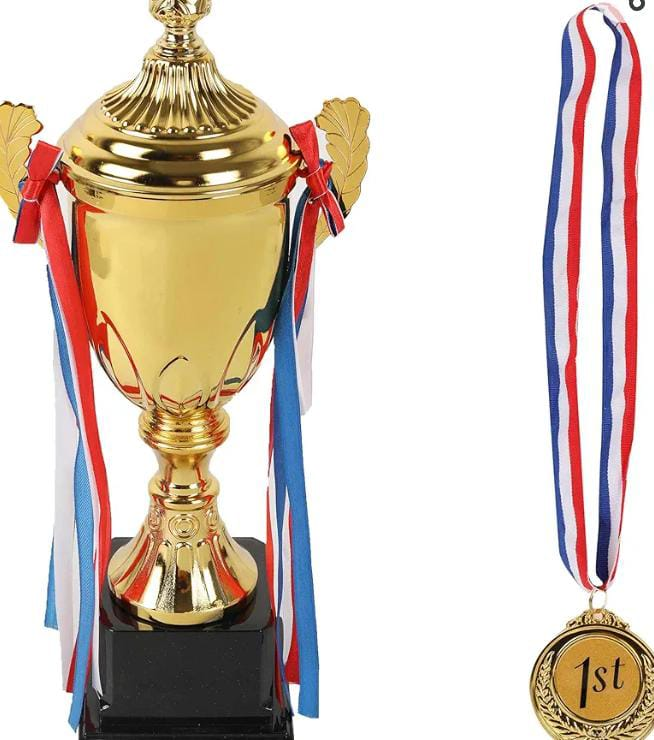

WAHID AHMAD KHAN
w.a.k41910@gmail.com.com
My name is Wahid Ahmad, and I hail from the serene region of Upper Chitral. I completed my FSC from Chitral, where I cultivated a strong foundation in academics and nurtured my passion for problem-solving and innovation. Currently, I am pursuing a degree in Software Engineering at FAST University, Peshawar. Becoming an engineer has always been a lifelong dream for me. I am deeply driven by a desire to create, innovate, and contribute to the rapidly evolving field of technology. My journey so far reflects my dedication and determination to excel in my chosen field, and I look forward to making a meaningful impact as a software engineer.
Experience
Class Representative

During my primary education and again in Class 12, I had the privilege of serving as the Class Representative. This role provided me with the opportunity to lead and represent my peers, enhancing my communication and organizational abilities. It also significantly boosted my leadership skills, allowing me to develop confidence, teamwork, and problem-solving capabilities that continue to benefit me in academic and professional settings.
Debat and Speech Socity Head
In Class 11 and 12, I served as the Head of the Debate and Speech Society. This role honed my public speaking, critical thinking, and leadership skills, as I organized events, guided peers, and represented my institution in various competitions.
Teaching Experience

"During my college years, I gained valuable experience teaching children. This role honed my communication, patience, and creative problem-solving skills as I adapted to the unique learning needs of each child. It was an enriching experience that deepened my passion for education and mentoring young minds."
Online Courses
"I also completed online courses in language and computer science, which enhanced my technical skills and broadened my knowledge base. These courses allowed me to explore new concepts, improve my proficiency in technology, and stay updated with evolving trends in these fields."
Education
Fast UNiversity Peshawer
AKHSS CHitral
AKHSS Chitral
Skills
- HTML
- C++
- Creative Writing
- Public Speaking
- CSS
Interests & Hobbies
"My primary interest lies in working with computers, where I enjoy exploring new software, solving technical challenges, and enhancing my skills in technology. This passion drives me to stay updated with the latest advancements and develop innovative solutions." "I also have hobbies that include playing cricket, which teaches teamwork and strategy, engaging in creative writing to express ideas, reading books for inspiration and knowledge, and tackling problem-solving tasks that challenge my analytical abilities."
- Book Reading
- Playing Cricket
- Technology and Programming
Awards & Certifications
- Class Representative Certificate 
- Essay Writing
- Drama Certificate
- Quiz Certficate 
-
 1st -  1st